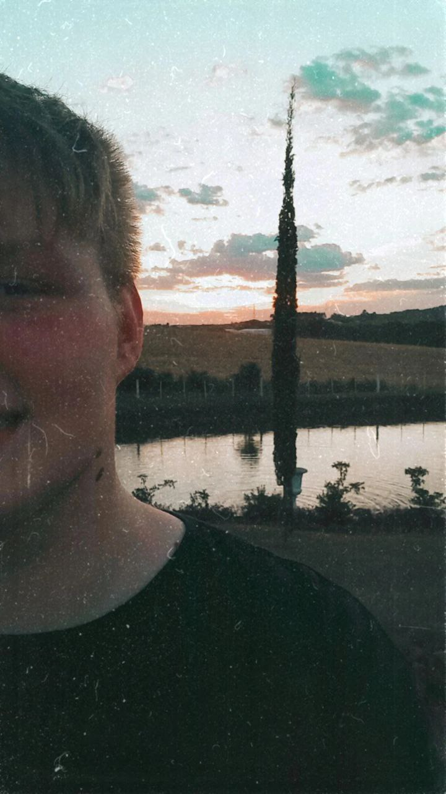
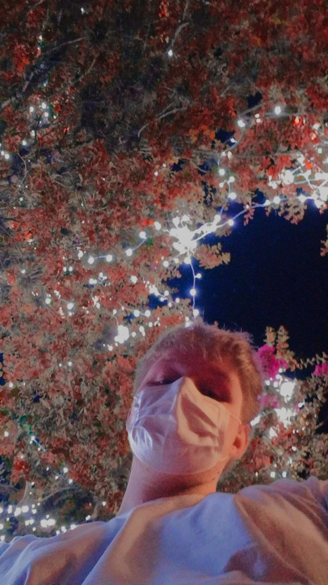
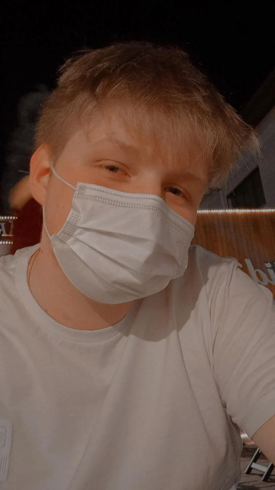

Lucas Bohrer é um jovem rapaz de 16 anos que está navegando nesse mar
da programação. Ele está apenas inciando, este site é seu primeiro projeto grande.
Ele tem um sonho de um diz se tornar um grande desenvolvedor web e de software full stack.
E para isso está fazendo inúmeros cursos, na sessão de Meus
projetos estão alguns dos projetos
que ele fez com estes cursos gratuitos.
Além da área de programação, estou muito ligado às artes, gosto muito de desenhar e pintar
e também faço música, tocando teclado, violino, flauta e Ukulele.